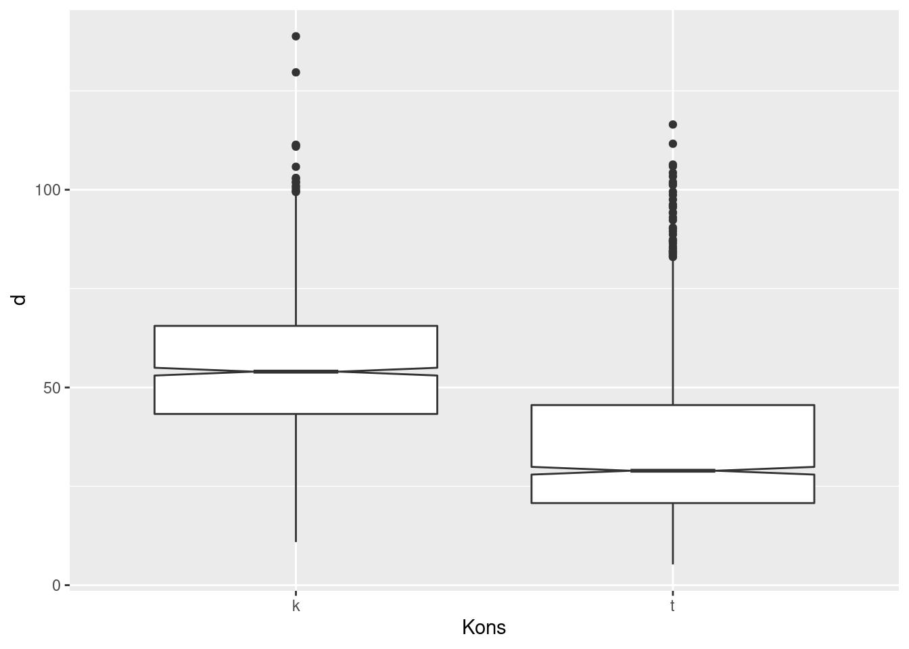
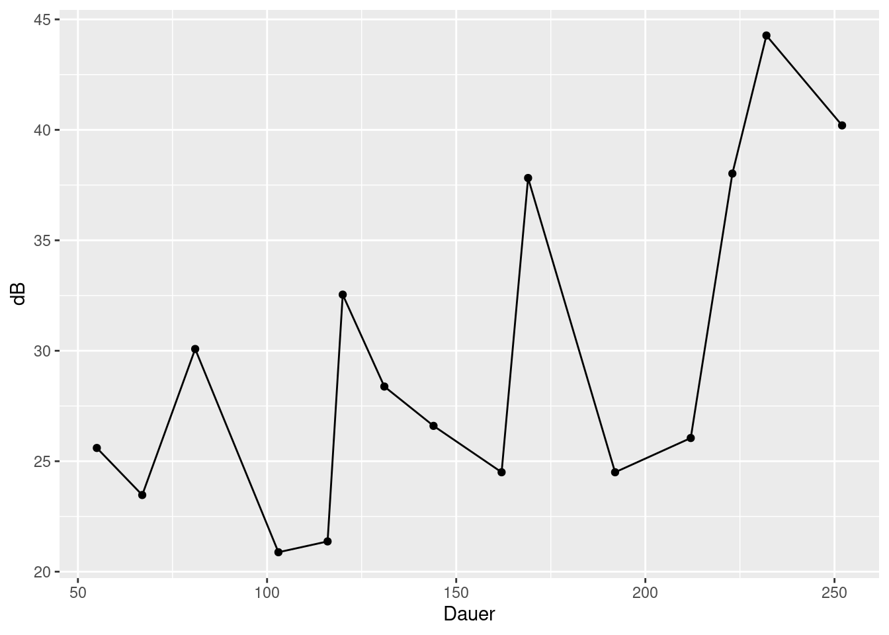
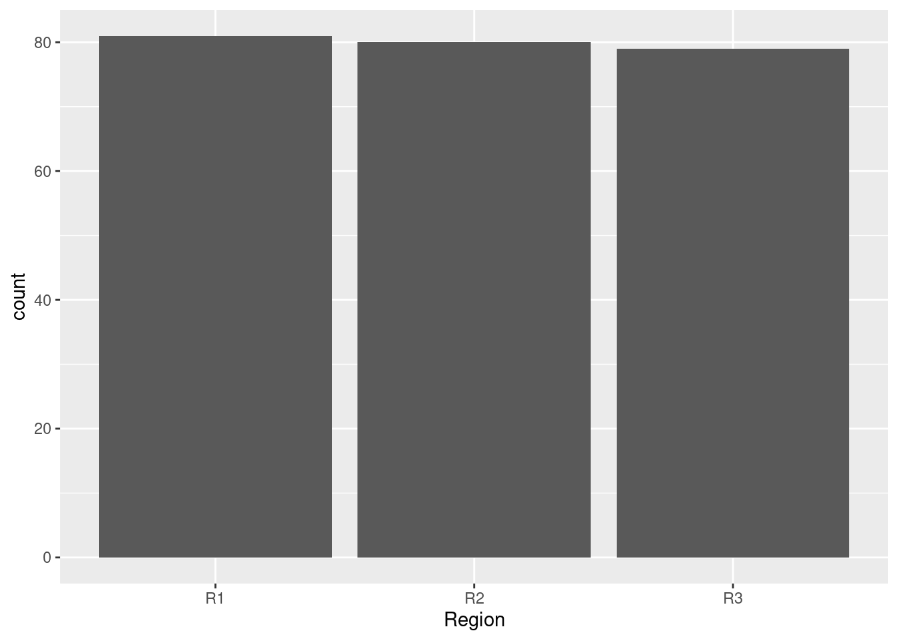
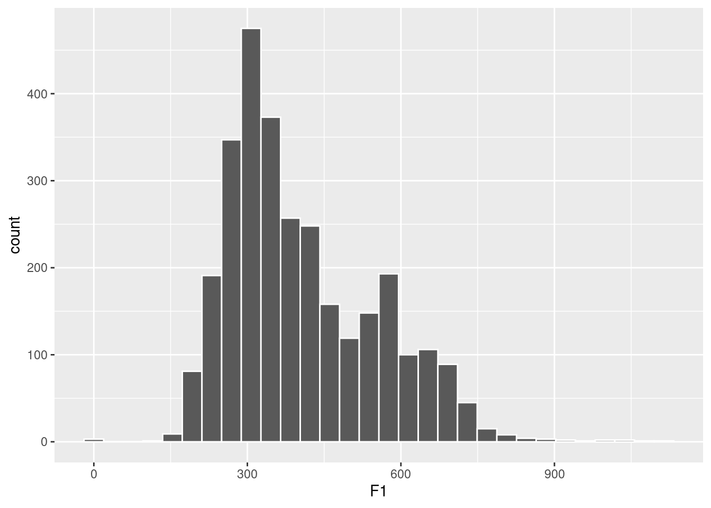
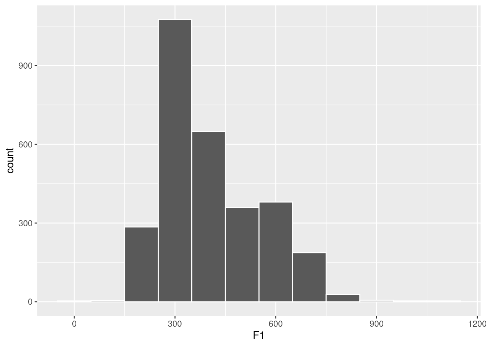
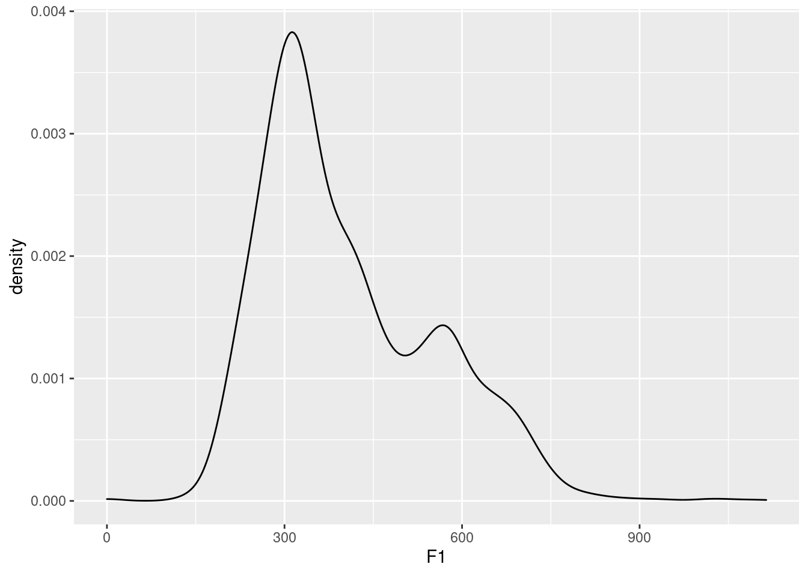

7 Daten abbilden mit ggplot2
Laden Sie dann die folgenden Packages und Data Frames:
library(tidyverse)## ── Attaching packages ─────────────────────────────────────── tidyverse 1.3.1 ──## ✓ ggplot2 3.3.5 ✓ purrr 0.3.4
## ✓ tibble 3.1.4 ✓ dplyr 1.0.7
## ✓ tidyr 1.1.3 ✓ stringr 1.4.0
## ✓ readr 2.0.1 ✓ forcats 0.5.1## ── Conflicts ────────────────────────────────────────── tidyverse_conflicts() ──
## x dplyr::filter() masks stats::filter()
## x dplyr::lag() masks stats::lag()library(magrittr)##
## Attaching package: 'magrittr'## The following object is masked from 'package:purrr':
##
## set_names## The following object is masked from 'package:tidyr':
##
## extracturl <- "http://www.phonetik.uni-muenchen.de/~jmh/lehre/Rdf"
asp <- read.table(file.path(url, "asp.txt"))
int <- read.table(file.path(url, "intdauer.txt"))
coronal <- read.table(file.path(url, "coronal.txt"))
vdata <- read.table(file.path(url, "vdata.txt"))ggplot2 ist eine Library aus dem tidyverse, die Ihnen sehr viele Möglichkeiten für die Visualisierung von Daten liefert. gg steht für grammar of graphics. Der Befehl, mit dem Sie eine Abbildung beginnen, ist ggplot(); das Hauptargument dieser Funktion ist der gewünschte Data Frame. Dann fügt man das sog. aesthetic mapping mittels aes(), sowie Funktionen für die Art der Abbildung, die Beschriftungen, die Legende, etc., hinzu. Jede Funktion wird mit + verbunden (nicht mit Pipes!).
7.1 Boxplots
Boxplots sind die wohl wichtigsten wissenschaftlich genutzten Abbildungen. In R werden sie mit dem Befehl geom_boxplot() erstellt. Zuerst zeigen wir, wie der Boxplot in Kapitel 5.4 erstellt wurde. Die Funktion ggplot() bekommt den Data Frame vdata. In den aesthetic mappings aes() tragen wir ein, dass F1 auf der y-Achse aufgetragen werden soll. Zuletzt bestimmen wir noch, dass ein Boxplot gezeichnet werden soll.
ggplot(vdata) +
aes(y = F1) +
geom_boxplot()
Boxplots eignen sich sehr gut zum Vergleichen von Werten für verschiedene kategoriale Gruppen. Dann werden diese Gruppen (üblicherweise) auf der x-Achse aufgetragen und auf der y-Achse wieder die gewünschten Werte. Hier sehen Sie ein Beispiel für die Dauer verschiedener Konsonanten aus dem Data Frame asp:
ggplot(asp) +
aes(x = Kons, y = d) +
geom_boxplot()
Boxplots können auch horizontal erstellt werden (wobei das meist weniger übersichtlich ist). Dann werden die Kategorien auf der y-Achse und die Werte auf der x-Achse aufgetragen:
ggplot(asp) +
aes(x = d, y = Kons) +
geom_boxplot()
Manchmal ist ein sogenannter Notch gewünscht; dafür nutzen wir das Argument notch = TRUE in der Funktion geom_boxplot() (und ggf. notchwidth, um die Tiefe des Notches anzupassen):
ggplot(asp) +
aes(x = Kons, y = d) +
geom_boxplot(notch = TRUE)
ggplot(asp) +
aes(x = Kons, y = d) +
geom_boxplot(notch = TRUE, notchwidth = 0.3)
Weiterführende Infos: Aesthetic mappings & Piping Data Frames
Streng genommen sind die aesthetic mappings immer ein Argument der Funktion, die über die Art des Plots bestimmt (also z.B. geom_boxplot()). Später werden Sie feststellen, dass manche Plots bestimmte aesthetic mappings benötigen bzw. zulassen, die andere Plots nicht verarbeiten können. Wir lagern die aesthetic mappings in den allermeisten Fällen aus der Plot-Funktion aus, weil das übersichtlicher ist. Es steht Ihnen aber frei, die aesthetic mappings in die Funktion als Argument reinzuschreiben:
ggplot(asp) +
geom_boxplot(aes(x = Kons, y = d),
notch = TRUE,
notchwidth = 0.3)
Innerhalb eines ggplot werden die einzelnen Funktion immer und ausschließlich mit einem Pluszeichen verbunden. Der Data Frame allerdings kann mit einer einfachen Pipe an ggplot()übergeben werden:
asp %>%
ggplot() +
aes(x = Kons, y = d) +
geom_boxplot()
Das ist besonders hilfreich, wenn Sie vor dem Plotten erst noch weitere Funktionen auf den Data Frame anwenden wollen, bevor Sie die daraus entstehenden Daten plotten. Hier filtern wir zum Beispiel zuerst nach Betonung, bevor wir anschließend nur noch die Dauer der betonten Wörter plotten:
asp %>%
filter(Bet == "be") %>%
ggplot() +
aes(x = Kons, y = d) +
geom_boxplot()
7.2 Scatter- & Lineplots
Scatterplots werden mit den Funktionen geom_point() und/oder geom_line() erstellt. Man kann auch beide Funktionen gleichzeitig verwenden. Auf die x- und y-Achse werden üblicherweise nur numerisch-kontinuierliche Daten aufgetragen. Im Folgenden plotten wir zum Beispiel Lautstärke in Dezibel gegen Dauer in Millisekunden.
# Punkte:
ggplot(int) +
aes(x = Dauer, y = dB) +
geom_point() 
# Linie:
ggplot(int) +
aes(x = Dauer, y = dB) +
geom_line()
# Beides:
ggplot(int) +
aes(x = Dauer, y = dB) +
geom_line() +
geom_point()
Manchmal ist es hilfreich, vertikale oder horizontale Referenzlinien in einem Plot einzuzeichnen. Horizontale Linien werden mit geom_hline() erzeugt, vertikale gerade Linien mit geom_vline(). Um eine horizontale Linie zu zeichnen, muss bekannt sein, an welcher Stelle die Linie die y-Achse schneidet. Deshalb bekommt geom_hline() immer das Argument yintercept. Bei geom_vline() muss mit xintercept die Schnittstelle der vertikalen Linie mit der x-Achse eingetragen werden. Wir fügen zum obigen Scatterplot zwei gerade Linien hinzu:
ggplot(int) +
aes(x = Dauer, y = dB) +
geom_point() +
geom_vline(xintercept = 150) +
geom_hline(yintercept = 35)
7.3 Barplots
Eine weitere wichtige Abbildungsform sind Barplots, die mit geom_bar() erzeugt werden. Dabei darf nur entweder x oder y in den aesthetic mappings verwendet werden. Das liegt daran, dass auf die jeweils andere Achse grundsätzlich ein count oder eine Proportion aufgetragen wird, die von ggplot berechnet wird. Der folgende Plot zeigt zum Beispiel, wie viele Vorkommnisse dreier Regionen im Data Frame coronal zu finden sind.
ggplot(coronal) +
aes(x = Region) +
geom_bar()
Die Balken können wir auch horizontal plotten, indem wir in den aesthetic mappings y statt x angeben:
ggplot(coronal) +
aes(y = Region) +
geom_bar()
Die Werte der Balken können Sie ganz einfach nachvollziehen, indem Sie sich die Anzahl der Vorkommnisse der drei Regionen mittels der Funktion table() anzeigen lassen:
table(coronal$Region)##
## R1 R2 R3
## 81 80 79Beim Barplot können Sie aber wie z.B. beim Boxplot noch eine weitere (kategoriale) Variable plotten. Die zweite Variable, die abgebildet werden soll, wird mit dem Argument fill angegeben, das die Levels der Variable als Füllfarben darstellt. Sie werden nächste Woche u.a. lernen, wie man Farben selbst bestimmen kann. Im Folgenden sieht man, wie häufig die Frikative Fr “s” (rot) und “sh” (blau) jeweils in den drei Regionen produziert wurden.
ggplot(coronal) +
aes(x = Region, fill = Fr) +
geom_bar()
Lassen Sie uns mittels der zuvor gelernten Funktionen für Grouping und Summarising die Werte in diesem Plot nachvollziehen. Dafür gruppieren wir nach Region und Frikativ und lassen uns dann mit n() innerhalb von summarise() die Anzahl der Zeilen im Data Frame pro Gruppenkombination bestimmen.
coronal %>%
group_by(Region, Fr) %>%
summarise(count = n())## `summarise()` has grouped output by 'Region'. You can override using the `.groups` argument.## # A tibble: 6 × 3
## # Groups: Region [3]
## Region Fr count
## <chr> <chr> <int>
## 1 R1 s 58
## 2 R1 sh 23
## 3 R2 s 59
## 4 R2 sh 21
## 5 R3 s 66
## 6 R3 sh 13Die Funktion geom_bar() kann als Argument noch position bekommen…
# ...um Proportionen anstatt einer absoluten Anzahl darzustellen:
ggplot(coronal) +
aes(x = Region, fill = Fr) +
geom_bar(position = "fill")
# ...um die Balken nebeneinander zu stellen:
ggplot(coronal) +
aes(x = Region, fill = Fr) +
geom_bar(position = "dodge")
7.4 Histogramme & Wahrscheinlichkeitsdichte
Histogramme zeigen die Verteilung von numerisch-kontinuierlichen Datenpunkten, indem sie den Wertebereich in mehrere kleine Bereiche einteilt. Ähnlich wie beim Barplot zeigen dann Balken (bins) an, wie viele Werte in einem bestimmten Wertebereich liegen. In ggplot werden Histogramme mit geom_histogram() erstellt. In den aesthetic mappings legen wir mit dem Argument x fest, welche Daten wir anschauen wollen, zum Beipspiel die F1-Verteilung:
ggplot(vdata) +
aes(x = F1) +
geom_histogram()## `stat_bin()` using `bins = 30`. Pick better value with `binwidth`.
Um die einzelnen Balken besser voneinander unterscheiden zu können, lassen wir die Balken weiß umranden, indem wir geom_histogram() das Argument color = "white" übergeben:
ggplot(vdata) +
aes(x = F1) +
geom_histogram(color = "white")## `stat_bin()` using `bins = 30`. Pick better value with `binwidth`.
Wir können auch selbst bestimmen, wie breit die Balken sein sollen, nämlich mit binwidth. Im Moment umfasst ein Balken ca. 40 Hz. Die folgenden Abbildungen zeigen die exakt selben Daten, aber mit Balken von 10 Hz und Balken von 100 Hz:
ggplot(vdata) +
aes(x = F1) +
geom_histogram(color = "white",
binwidth = 10)
ggplot(vdata) +
aes(x = F1) +
geom_histogram(color = "white",
binwidth = 100)
Sie sehen, dass dies für die Repräsentation der Daten einen großen Unterschied macht – gehen Sie also immer mit Bedacht vor, wenn Sie die binwidth von Histogrammen verändern.
Mit dem Histogramm verwandt ist die Wahrscheinlichkeitsdichte (engl. probability density). Die einzige Änderung, die wir dafür vornehmen müssen, ist aes() das Argument y = ..density.. zu übergeben. Dies verändert die y-Achse so, dass statt der Anzahl an Datenpunkten die Wahrscheinlichkeitsdichte der Datenpunkte angezeigt wird. Per definitionem ist die Fläche unter den Balken der Wahrscheinlichkeitsdichte insgesamt 1.
ggplot(vdata) +
aes(x = F1, y = ..density..) +
geom_histogram(color = "white",
binwidth = 100)
Die Wahrscheinlichkeitsdichte wird berechnet als count / (n * binwidth), wo n die Anzahl aller Datenpunkte ist. In dem Histogramm oben (mit binwidth = 100) liegen zum Beispiel 285 Datenpunkte (count) im Wertebereich zwischen 150 Hz und 250 Hz. Die Wahrscheinlichkeitsdichte für diesen Balken wird also wie folgt berechnet:
count <- 285
n <- nrow(vdata)
binwidth <- 100
dens <- count / (n * binwidth)
dens## [1] 0.0009557344Dieser Wert stimmt mit dem density-Wert überein, den wir in der Wahrscheinlichkeitsdichteverteilung für denselben Balken sehen.
Die Fläche dieses Balkens in der Wahrscheinlichkeitsdichteverteilung wird berechnet als binwidth * binheight:
area <- binwidth * dens
area## [1] 0.09557344Wenn man die Fläche aller Balken berechnet und summiert, ist die Gesamtfläche 1.
Stellen Sie sich nun ein Wahrscheinlichkeitsdichte-Histogramm vor, das aus unendlich vielen Balken besteht (die dementsprechend unendlich schmal sein müssen). Sie erhalten nicht mehr einzelne Balken sondern eine kontinuierliche Funktion, die sich Wahrscheinlichkeitsdichteverteilung (probability density function) nennt. Auch dafür kennt ggplot2 eine Funktion: geom_density().
ggplot(vdata) +
aes(x = F1) +
geom_density()
Hier gilt genau wie bei dem Histogramm mit der Wahrscheinlichkeitsdichte, dass das Integral (die Fläche) unter der Kurve 1 ist.
Weiterführende Infos: Histogramme und Probability Density
Für weitere Informationen schauen Sie sich gerne Wilke’s Fundamentals of Data Visualization in R, Kapitel 7 an.